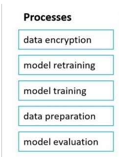
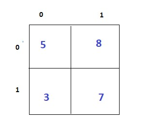

1.Predicting whether patient will develop diabetes based on patients medical history is an example of Anomaly detection?
2.When developing an AI system for self driving car, the microsoft for responsible AI should be applied to ensure consistent operation system during unexpected circumstances.
3.Your company is exploring the use of voice recognition technologies in its smart home devices. The company wants to identify any barriers that might unintentionally leave out specific user groups. This an example of which Microsoft guiding principle for responsible AI?
4.------is used to generate additional features.
5.An AI solution that is offered different prices for different sale territories is an example of microsoft inclsiveness principle for responsible AI?
You plan to deploy an Azure Machine Learning model as a service that will be used by client applications. Which three processes should you perform in sequence before you deploy the model? To answer, move the appropriate processes from the list of processes to the answer area and arrange them in the correct order. Select and Place:
7.The system must not discriminate based on gender race?
8. Which statement belong to feature selection?
9. calculate Recall?
10.An automated machine learning enable you to specify a dataset and will automatically understand which label to predict?
11.A banking system that predict whether a loan will be repaid is an example of the type of machine learning?
12:A validation set can be used to verify that all the training data was used to train the model?
13.Model can be used to predict sale price of auctioned items?
14.Which two components can you drag onto a canvas in Azure Machine Learning designer? Each correct answer presents a complete solution.
15. Which one actions are performed during the data ingestion and data preparation stage of an Azure Machine Learning process?
16:You need to build an app that will read recipe instructions aloud to support users who have reduced vision. Which version service should you use?
17.Which statement belong to speech services?